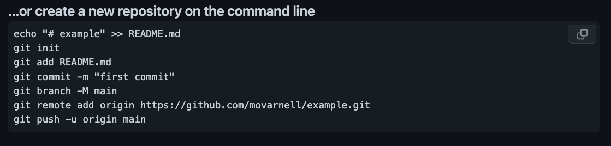

Getting Started with 

Welcome to our beginner's guide on how to use GitHub! If you're new to coding or version control, you're in the right place. We'll take you through each step, explaining everything in simple terms.
What is GitHub?
Think of GitHub as a place where you can save your code projects, share them with others, and work on them together. It's like a magical code storage!
When using GitHub it is important to understand that you can commit often and keep your information backed up. This is a great way to add security to what you're working on. If something were to happen to your local information you can even pull down what is on GitHub and use it to restore all that you had done all the way to the last time you commited.
<>There are three steps involved each time after first setting up your GitHub account but the first time there will be some additional commands that are used to get it all setup for each new repository. More on that later though, let's get started!Step 1: Setting up a GitHub Account
Before you can use GitHub, you need an account.
- Visit github.com.
- Click on 'Sign up' and follow the instructions.
Step 2: Creating a New Repository
A repository (or "repo") is like a folder for your project. Here's how you make one:
- Once logged in, click on the '+' icon on the top right and select 'New repository'.
- Name your repository and give it a description.
- Click 'Create repository'.
Step 3: Adding Code to Your Repository
Let's add some code to your new repo! You should have some files that you have already made in a folder for the assignments and you will want to make sure in the terminal you're in the correct folder before you setup the repository locally. When we say locally we mean on your computer. When we say remotely we mean on GitHub's website.
If you haven't started a project or don't already have a folder with files in it, you can create a new file in your repository by clicking on the 'Add file' button and selecting 'Create new file'.
Step 4: Using Git with GitHub
Git is a tool that helps you track changes in your code. It works hand-in-hand with GitHub.
The first time you setup a new repository you will have a list of commands that github will show you on the website. You will want to copy and paste those into your terminal one by one, if your using Mac ignore the 'Echo' command that comes first. Additionally you can use a "." instead of README.MD if you want to go on and send up all your files. It will look something like this:
Here is a step-by-step explanation of each Git command:
1. echo "# example" > README.md
echois used to display text.# exampleis the text to be displayed.>redirects the output to a file.README.mdis a markdown file where the output is saved.
2. git init
- Initializes a new Git repository in the current directory.
- Creates a hidden
.gitdirectory with Git repository files.
3. git add README.md
- Adds the
README.mdfile to the staging area in Git. - Prepares the file for a commit. You can also use just a period after
git addto add all changes in the project. That would look like:git add .
4. git commit -m "first commit"
- Commits the staged changes to the repository.
-m "first commit"sets the commit message to "first commit".
5. git branch -M main
- Renames the current branch to
main.
6. git remote add origin https://github.com/movarnell/example.git
- Adds a new remote repository named
origin. https://github.com/movarnell/example.gitis the URL of the remote repository.
7. git push -u origin main
- Pushes the changes in the local repository to the
mainbranch of the remote repositoryorigin. -usets the upstream for the branch.
Those commands are only done the first time when you setup your repository the first time. After that the basic commands to upload changes to your code will look like the ones below:
git add .
git commit -m "Commit Message Here"
git push
While primarily in this bootcamp we will use GitHub for pushing your assignments up, it is best practice to push your code up often. Take advantage of the security that GitHub offers and use the ability to backup remotely for free!

Why Use GitHub?
With GitHub, you can:
- Save versions of your code, so you can go back if something breaks.
- Work with other people easily.
- Share your work with your Mentor, Teachers, or even peers in the help channel so they can see all the code and pull it down to find the problems.
- Show off your work to the world!
What is a Commit Message?
A commit message is a short description of the changes you made. It's like a note to yourself and others to help you understand what you did.
Here are some tips for writing a good commit message:
- Be specific. For example, instead of "Added a button", say "Added a button to the home page".
- Keep it short. 50 characters or less is best.
- Use the imperative mood. For example, instead of "Added a button to the home page", say "Add a button to the home page".
- Don't end with a period.
Next Steps
Now that you know the basics, keep practicing and exploring. GitHub has a lot to offer. Happy coding!


 Red Pill: Terminal
Red Pill: Terminal Blue Pill: VS Code
Blue Pill: VS Code